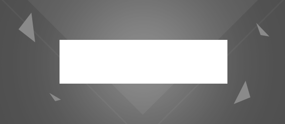
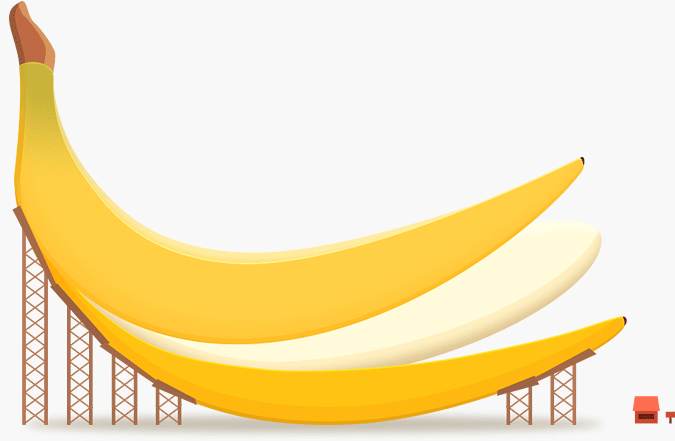

Banner的构图与层次筛选
Banner作为一项运营里面日常经常出现的工作都已再熟悉不过，我尽量简洁且说些能让人听懂的地球语言来 阐述一下自己对Banner的理解与设计方法。首先说说Banner的构图，最方便的方法运用基本几何形状来搭 配出你想要的构图。透气性、画面的平衡、重点的突出、气氛的渲染这四点是在做一个Banner之前需要优先 考虑的问题，其次在考虑颜色搭配和元素搭配。

Banner作为一项运营里面日常经常出现的工作都已再熟悉不过，我尽量简洁且说些能让人听懂的地球语言来 阐述一下自己对Banner的理解与设计方法。首先说说Banner的构图，最方便的方法运用基本几何形状来搭 配出你想要的构图。透气性、画面的平衡、重点的突出、气氛的渲染这四点是在做一个Banner之前需要优先 考虑的问题，其次在考虑颜色搭配和元素搭配。
